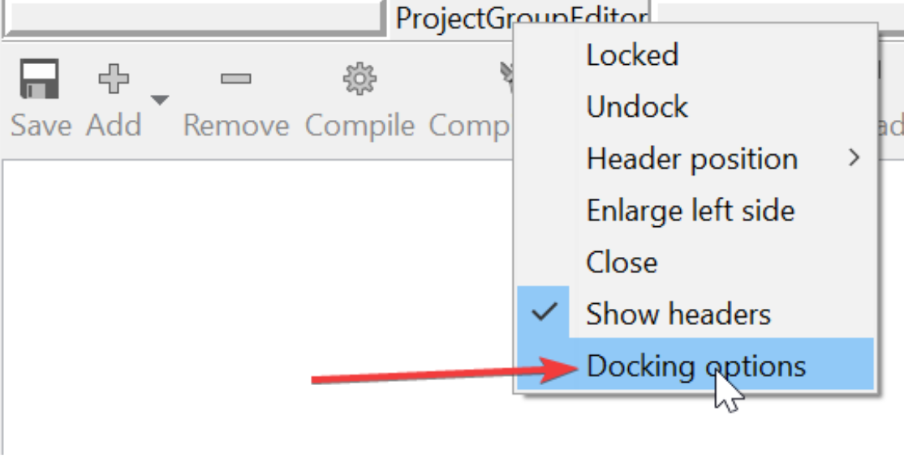
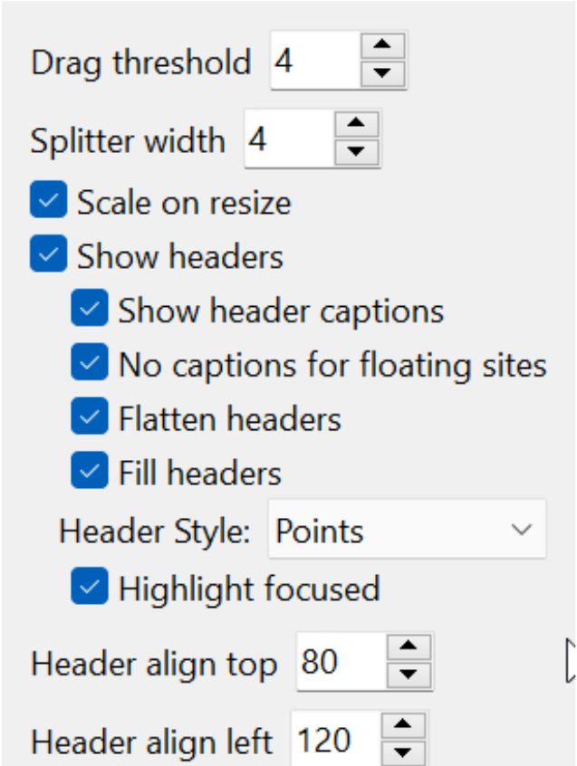
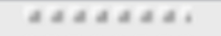
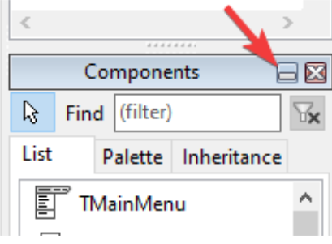
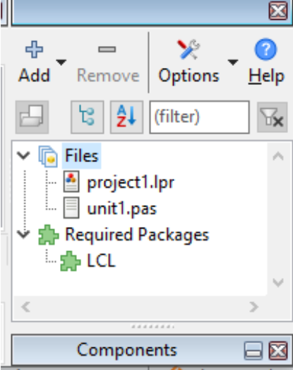

Opções de ancoragem das ferramentas toolbox
Para acessar as configurações avançadas de docagem, clique com o botão direito sobre as linhas de docagem (as pequenas barras pontilhadas que permitem arrastar os painéis) e selecione Docking options (Opções de Ancoragem):

A janela de configurações será exibida. Note que algumas opções podem variar dependendo da versão do seu Lazarus (como a 2.0.12):

Principais Configurações:
- Drag threshold: Define a sensibilidade do arrasto. Geralmente, o valor "4" refere-se a 4 pixels de movimento necessários para que a IDE considere que você deseja destacar ou mover o painel.
- Splitter width: Define a largura da barra divisória (splitter) onde o cursor muda para redimensionamento (crHSplit). Facilitar o clique nesta área melhora a usabilidade ao ajustar alturas e larguras:

- Header Style (Estilo de cabeçalho): Controla a aparência visual do título das janelas docadas. Estilos como "Points" ou "ThemedCaption" costumam oferecer um visual mais limpo e moderno.
- Multiline Tabs: Útil para quando você tem muitas abas em um único container. Se ativada, as abas que não couberem na largura do painel saltarão para uma nova linha, evitando o scroll lateral (side-scrolling), embora possa poluir um pouco a estética.
Recurso de Minimizar (Lazarus 2.2+)
Em versões mais recentes, você encontrará opções para minimizar painéis docados, permitindo que outras ferramentas ganhem mais espaço temporariamente:

Ao minimizar um painel, como a paleta de componentes lateral, você ganha área útil de tela e pode maximizá-lo apenas quando necessário:

Este fluxo de trabalho — manter ferramentas secundárias minimizadas — é altamente recomendado para otimizar o espaço em monitores menores ou focar no editor de código.